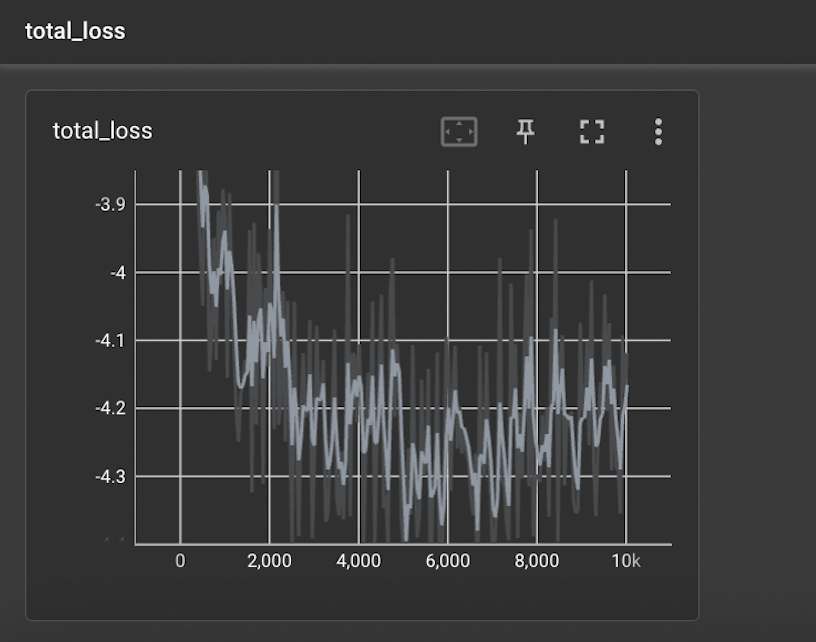

We designed and implemented a robot that sorts blocks according to color into goal locations that it must discover through trial and error. We designed an environment with two goal locations and blocks of two colors, red and green, where red or green have an optimal goal location which does not depend of the other color. This project was implemented using 'classical' robotic methods using HSV color sorting, an inverse kinematics controller, and preprogrammed assumtions about the table-block environment. This project is designed to serve as a baseline comparison to unsupervised learning based implementations of object perception and robotic manupulation. We also investigated the use of a object-detection model trained with unsupervised learning to improve the perception system.
This project was intended to contribute to research into unsupervised learning through robotic interaction, and more specifically learning unsupervised object-centric representations. Object-centric representations have shown promising results in being able to provide powerful functionlity models for physics understanding, multi-agent prediction, and planning and causal reasoning [Stocking]. Another motivation for us was to provide an experimental testing ground for future experiments in the Hybrid Systems Lab by setting up the UR5 arm and providing intuitive documentation for future users.
We wanted to build a robotic system that could solve a task in an object-centric, partially-unobservable environment. Our goal was to use a UR5 robot arm and an RGB/Depth camera to interact with with blocks and move them to a goal location. There would be two goal locations and the correct goal location will be unknown to the robot at the beginning, and the robot will have to respond to outside feedback to learn the correct goal. We aimed to develop an algorithm for solving the task using classical methods to serve as a baseline to compare ML approaches. Our reach goal was to replace the perception, action planning, or robotic control with an unsupervised deep learning algorithm. In the end, we made progress an unsupervised object-centric deep neural network to replace the perception system. This kind of task is difficult for current machine learning techniques, but representations that can keep track of multiple objects and update knowledge about their respective properties should make it possible for machine learning to solve the task.
Our design involved a the table-block environment which is observed by the camera. The camera reports the state of the environment to an algorithm which directs the arm to change the environment. When blocks are placed onto a goal location, the robot waits for human feedback to observe the reward state, which then inform the following actions of moveing blocks.
The environment consists of a table with rectangular wooden blocks that are red or green. The goal locations are blue cardboard circles taped to the table. It is assumed that each goal has a reward value associated with a color, for example, all red blocks will incur a reward of x if placed on goal y.
The perception system consists of a RGB-Depth camera mounted on a tripod that looks down onto the table. The blocks and goal locations are localized with respect to the camera usuing the camera intrinscts and the depth meansument. The camera is localized with respect to the UR5 are using an AR tag which is fixed to the base of the robot. Thus we are able to localize the blocks and goals with respect to the UR5 arm. The camera recognizes the blocks using HSV color filtering and making masks for the colors red, green or blue. Just a color mask cannot deal with multiple blocks, so we apply K-means clustering to the mask image to determine the number and centroids of blocks of the same color.
We used the MoveIt inverse kinematic controller to control the UR5 arm. We wrote procudures to reliably pick and place blocks given a block's location and a target location. Our sorting algorithm will first put a red block on a goal location. It will then wait for a human to input into the terminal the current reward. It will continue testing all colors on all goals, and then put the blocks on the optimal goal to maximize the reward.
We used a UR5 Robot, which is a 6-DOF arm manufactured by Universal Robots. For control, we use the MoveIt package to plan and execute trajectories; this package has a backbone of IKFast, which is a library that generates analytical solutions to the inverse kinematics problem. The main purpose of this component is to move the gripper to positions where it can pick up and move objects as desired.
The end-effector tool used for our project is the Robotiq 2F-140 gripper, with 1 degree of freedom. This is primarily used for grabbing and releasing objects.
We used an Intel Realsense D435i camera, which provides both visual and depth information. This is mounted on a camera stand and is positioned in a top-down view of the working area. The main purposes of the camera are to localize the UR5 arm with respect to the rest of the environment and perceive objects of interest within the environment.
Here is the setup of the environment with all of the components together. The base of the UR5 robot is kept at a fixed position on the table, and with the camera on the stand, the AR tag on the wooden base frame of the robot is used to establish the position of the robot and camera relative to each other. Then, the various goal positions and blocks in the environment are processed by the camera and these objects are then accurately localized with respect to the rest of the system. Below shows the processed information of the enviroment within RViz.
We used ROS Noetic running on Ubuntu 20.04 LTS (Focal Fossa). We used the ROS-Industrial Universal Robots repository on Github for MoveIt functionality on the UR5. We used the Robotiq Fork by TAMS to control the gripper in ROS Noetic. We also used the ar_track_alvar package for AR tag functionality. We structured our software into a perception node, and an executive node. The perception node published the location of the blocks and goals, while the executive node directed the robot using the envirionment state and human input.
We also performed some experiments on applying unsupervised learning to improve the perception abilities of the system. Instead of relying on HSV thresholding, which has to be recalibrated and adjusted for new objects and lighting conditions, we instead tried using an object detection algorithm trained on a dataset consisting of blocks moving around a scene.
Specifically, we used the model in Stocking et. al. 2023, which is an unsupervised object detection algorithm based on SIMONe . These algorithms produce object segmentation masks without requiring explicit object labels in the training dataset, which make them particularly useful for our application. The object masks can be easily be used to compute the 3D position of the object.
Below are some demos of the classical algorithm at work. We test each color in both goal positions, receiving feedback from humans to determine the optimal locations of all blocks. Notice that the robot is able to accurately locate all positions and move accordingly!
Training our model on the CATER dataset, we find that our model shows modest performance, with good reconstruction (right, middle) of the video frames, but relatively poor object segmentation (right, bottom). Despite being able to make out some shapes, it has yet to generalize well to out-of-distribution objects.
We believe that performance could be significantly improved with a more diverse and high-quality dataset. In particular, one with fewer objects that are the same shape as the blocks, so it more closely resembles our workspace. Additionally, a dataset with more object movement within each video could allow the model to better learn the nature of the objects, potentially allowing to better generalizability. Moreover, we believe further hyperparameter tuning could also improve the model.
Our results show promise in being able to segment our environment into representation masks that correspond to different objects. Given our time constraints, we were unable to get strong reconstructions on out-of-distribution data. If we had more time with the project, or if we decide to continue this line of research, we would first improve segmentation performance. Then, we would use the object masks to output a (x,y) coordinate of the object on the image place. Using camera intrinsics, we could get the 3D coordinate of the block, and replace the classical HSV thresholding technique. Further research in this area would be to observe how disentangled latent variables can inform the robot on the properties of the object in order to improve performance of the task.
This is an example training loss from one of our experiments. Training a single experiment took roughly half a day, so if we continue this project, one goal would be to see a comparison of losses with varied hyperparameters.
